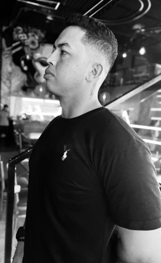

Olá! Sou Nailson Santos
Sou um estudante de sistemas de informação com experiência na implantação e configuração de sistemas de segurança eletrônica, manutenção de computadores e redes. Minhas habilidades incluem diagnóstico e resolução de problemas técnicos, oferecimento de suporte aos usuários, documentação de procedimentos e soluções, e auditoria de unidades instaladas. Com experiência em empresas de segurança e TI, busco aprimorar continuamente minhas competências e contribuir para a eficiência tecnológica das organizações.
Saiba Mais!
